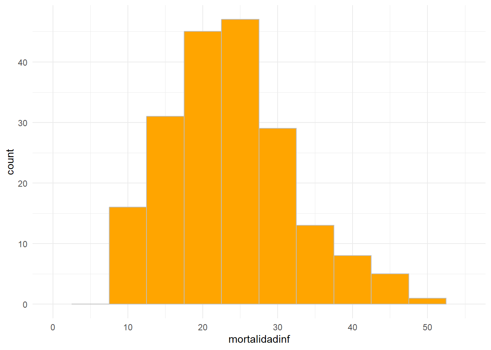
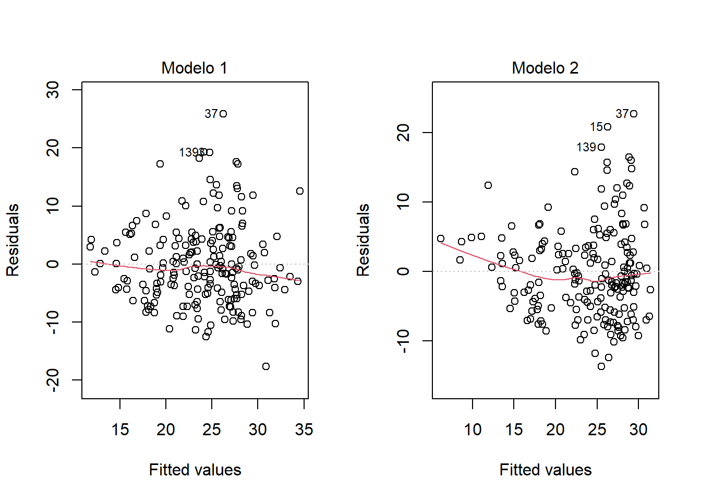
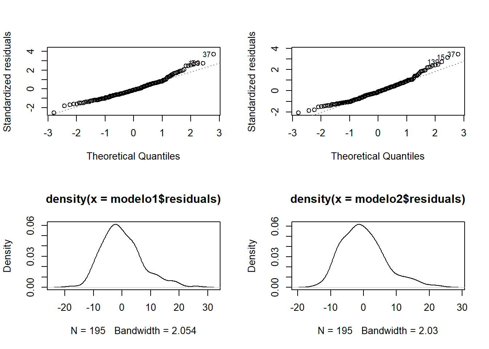
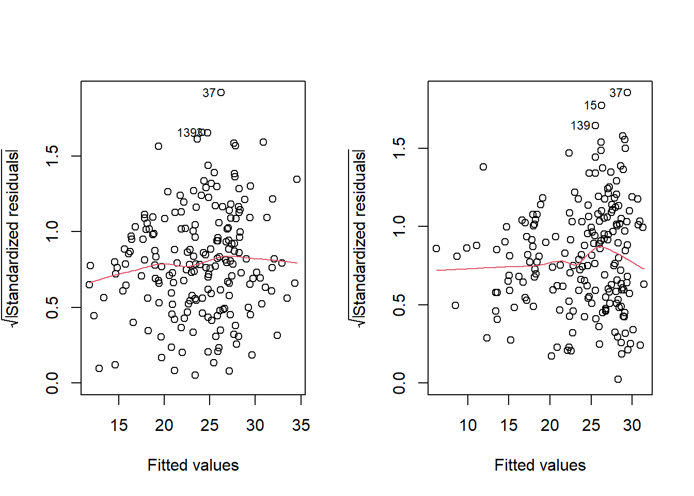
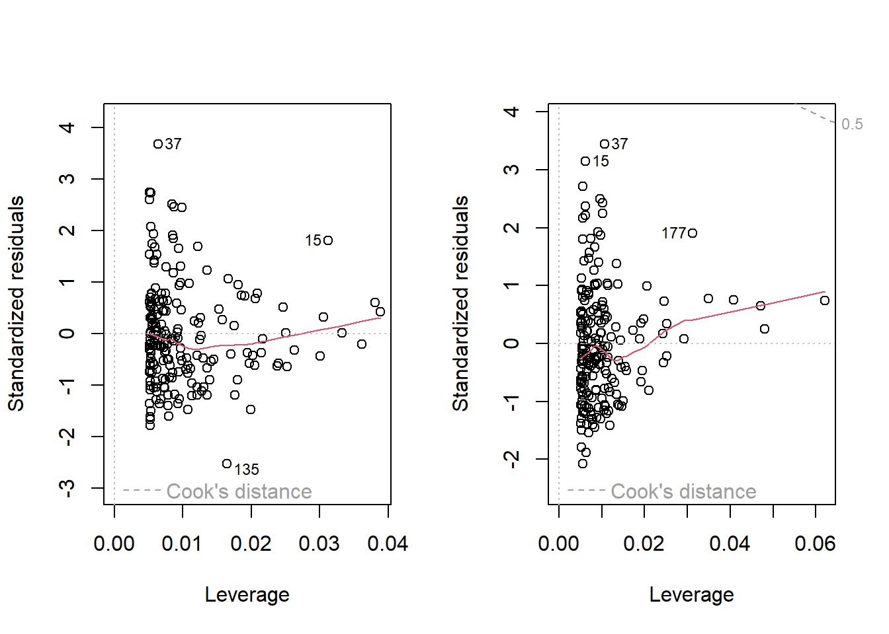
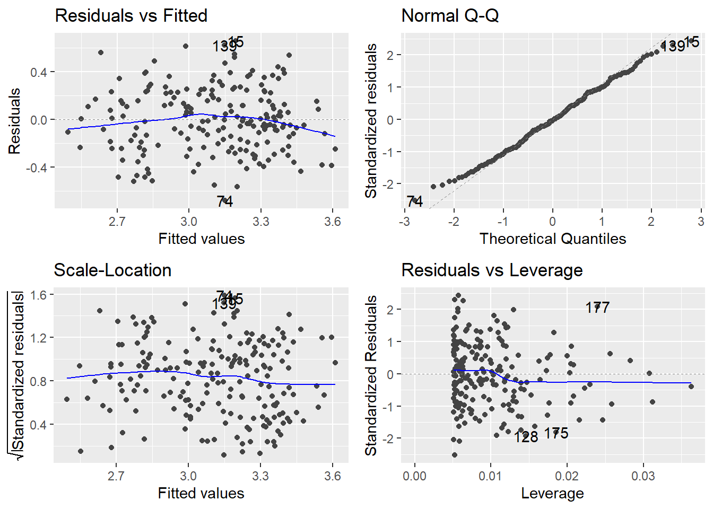

FACULTAD DE CIENCIAS SOCIALES - PUCP
Curso: SOC294 - Estadística para el análisis sociológico 2
Semestre 2025 - 1
Los residuales o residuos de un modelo de regresión son la diferencia entre el valor observado de la variable dependiente y el valor esperado de la misma que se calcula mediante la ecuación de regresión.
e=y−y^
La regresión lineal asume que los datos deben cumplir los siguientes supuestos, que se verifican analizando el patron de distribución de los residuos:
Linealidad: La relación entre la variable dependiente (Y) y la variable independiente (X) debe ser lineal
Normalidad de los residuos: Los residuos deben tener una distribución normal.
Homogeneidad de la varianza de los residuos: Los residuos deben tener una varianza constante (homocedasticidad).
Independencia de los residuos: Los residuos deben ser independientes los unos de los otros, no deben estar correlacionados entre sí.
Es necesario verificar estos supuestos, los problemas potenciales que pueden aparecer son:
No linearidad de la relación entre las variables
Heterocedasticidad: Errores no constantes de los residuos
Presencia de valores influyentes en los datos, que pueden ser:
Outliers o valores atípicos en la variable dependiente (Y)
Puntos con alto efecto de palanca: valores extremos en la variable independiente (X)
Autocorrelación: Los valores de Y de un caso están relacionados con los valores de Y en otro caso, esto puede ser: Autocorrelación temporal: problemas con series de tiempo Autocorrelación espacial: problemas con casos cercanos o vecinos espacialmente
Para evaluar si un modelo de regresión cumple con los supuestos indicados se utilizan un conjunto de gráficos de residuales:
Para linealidad: Residuos vs Valores Esperados de Y
Para normalidad: Residuos vs distribución normal (Normal Q-Q)
Para homocedasticidad: Scale-location plot
Para valores influyentes: Residuales vs leverage plot
library(rio)
data=import("PeruData.csv")Explicación de la data:
En los últimos años, se ha documentado un declive de la mortalidad infantil tanto a nivel de Perú como en América Latina.
Se ha argumentado que el proceso de descenso de la mortalidad infantil puede ser explicado por un conjunto de invertenciones en salud pública y por las mejoras de las condiciones de vida de la población.
Unidad de análisis: Provincias
library(tidyverse)
data %>%
summarize(Min = min(mortalidadinf),
Media = mean(mortalidadinf),
Mediana = median(mortalidadinf),
Max = max(mortalidadinf))## Min Media Mediana Max
## 1 9.2 23.8959 23 52.1ggplot(data, aes(x = mortalidadinf)) +
geom_histogram(binwidth = 5, fill="orange", col="grey") +
scale_x_continuous(breaks = seq(0,55,10), lim = c(0,55))+
theme_minimal()
data %>%
summarize(Min = min(IDE),
Media = mean(IDE),
Mediana = median(IDE),
Max = max(IDE))## Min Media Mediana Max
## 1 0.4245 0.6519226 0.6367 0.9104data %>%
summarize(Min = min(percapitaf),
Media = mean(percapitaf),
Mediana = median(percapitaf),
Max = max(percapitaf))## Min Media Mediana Max
## 1 107.7527 241.5346 212.2963 556.4218library(ggplot2)
library(stargazer)
library(ggfortify)
modelo1=lm(mortalidadinf~IDE, data=data)
modelo2=lm(mortalidadinf~percapitaf, data=data)
stargazer::stargazer(modelo1,modelo2, type='text')##
## ===========================================================
## Dependent variable:
## ----------------------------
## mortalidadinf
## (1) (2)
## -----------------------------------------------------------
## IDE -46.847***
## (5.016)
##
## percapitaf -0.056***
## (0.005)
##
## Constant 54.437*** 37.487***
## (3.309) (1.301)
##
## -----------------------------------------------------------
## Observations 195 195
## R2 0.311 0.395
## Adjusted R2 0.308 0.392
## Residual Std. Error (df = 193) 7.060 6.619
## F Statistic (df = 1; 193) 87.241*** 125.846***
## ===========================================================
## Note: *p<0.1; **p<0.05; ***p<0.01par(mfrow=c(1,2))
plot(modelo1, 1, caption = "Modelo 1")
plot(modelo2, 1, caption = "Modelo 2")
Lo que debemos esperar de este gráfico es que no aparezca un patrón lineal entre los residuales y los valores pronosticados de Y (y^). En tal sentido el modelo 1 cumple mejor este supuesto que el modelo 2.
par(mfrow=c(2,2))
plot(modelo1, 2, caption = "Modelo 1")
plot(modelo2, 2, caption = "Modelo 2")
plot(density(modelo1$residuals))
plot(density(modelo2$residuals))
Para el primer par de gráficos, en el eje vertical se muestran los residuos estandarizados. En este caso la expectativa es que los puntos se acercen lo más posible a la línea oblicua del gráfico que representa una distribución normal. Ambos modelos tienen una distribución de residuos asimétrica, pero la asimetría es ligeramente más acentuada en el modelo 2.
par(mfrow=c(1,2))
plot(modelo1, 3, caption = "Modelo 1")
plot(modelo2, 3, caption = "Modelo 2")
En este caso, se espera que la dispersión de la raiz cuadrada de los residuos estandarizados no presente muchas variaciones según los valores esperados de Y.
par(mfrow=c(1,2))
plot(modelo1, 5, caption = "Modelo 1")
plot(modelo2, 5, caption = "Modelo 2")
En los gráficos de diagnóstico de modelos lineales en R, los números que aparecen en la esquina superior (como 0.5 y 1.0) suelen corresponder a los valores de apalancamiento (leverage). Estos valores indican la influencia potencial de cada observación en el ajuste del modelo.
¿Qué es el apalancamiento (leverage)? El apalancamiento mide cuánto influye una observación en la estimación de los coeficientes del modelo.
Se calcula a partir de la matriz de diseño del modelo y depende de la distancia de cada observación respecto al centro de los datos.
Los valores de apalancamiento están en el rango [0, 1]:
0: La observación no tiene influencia en el modelo.
1: La observación tiene la máxima influencia (es un punto extremo).
¿Qué significan 0.5 y 1.0 en el gráfico?
0.5 y 1.0 son valores de referencia para el apalancamiento:
0.5: Es un umbral común para identificar observaciones con apalancamiento moderado o alto.
1.0: Es el valor máximo de apalancamiento, que indica que la observación es un punto extremo con gran influencia en el modelo.
Por lo general cuando nuestros modelos de regresión presentan alguno de los problemas mencionados, ello puede significar que:
Algunas variables presentan distribuciones muy asimétricas (problemas de linealidad y normalidad): En estos casos podemos tratar de cambiar la escala de las mismas ascendiendo o descendiendo en la escalera de potencia (utilizando una transformación logarítmica, por ejemplo). Nuestros modelos están sub especificados (problemas de linealidad o de heterocedasticidad): Estamos omitiendo alguna(s) variable(s) importante(s) que puede(n) explicar patrones no lineales o varianzas no homogéneas de los residuales. Casos extremos con valores muy atípicos: un caso particular que no se ajusta al patrón general y que dificulta la estimación de los coeficientes de regresión, en estas situaciones podemos excluir esos casos del análisis, previa justificación.
Transformar variables e incluir otras variables predictoras:
modelo3=lm(log(mortalidadinf)~log10(percapitaf), data=data)
stargazer(modelo1, modelo2, modelo3, type = "text",
omit.stat=c("ser","f"),
star.cutoffs = c(0.05, 0.01, 0.001))##
## =========================================================
## Dependent variable:
## ---------------------------------------
## mortalidadinf log(mortalidadinf)
## (1) (2) (3)
## ---------------------------------------------------------
## IDE -46.847***
## (5.016)
##
## percapitaf -0.056***
## (0.005)
##
## log10(percapitaf) -1.565***
## (0.122)
##
## Constant 54.437*** 37.487*** 6.792***
## (3.309) (1.301) (0.287)
##
## ---------------------------------------------------------
## Observations 195 195 195
## R2 0.311 0.395 0.462
## Adjusted R2 0.308 0.392 0.459
## =========================================================
## Note: *p<0.05; **p<0.01; ***p<0.001autoplot(modelo3)